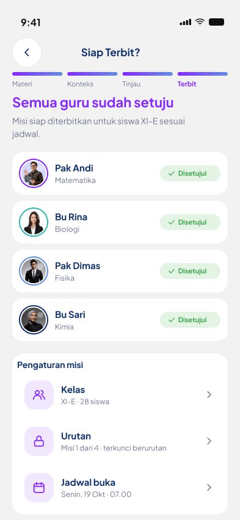
Buat misi bersama
AI menyusun draf, tiap guru menyetujui langkah dari mapelnya.
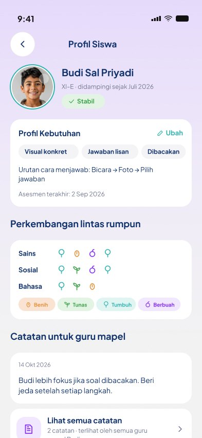
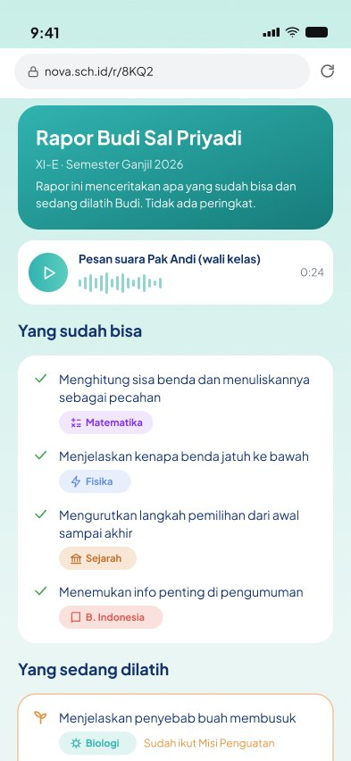
NOVA+ + + +Siswa slow learner berbasis AI guna meningkatkan efektivitas pembelajaran berdiferensiasi di sekolah inklusif
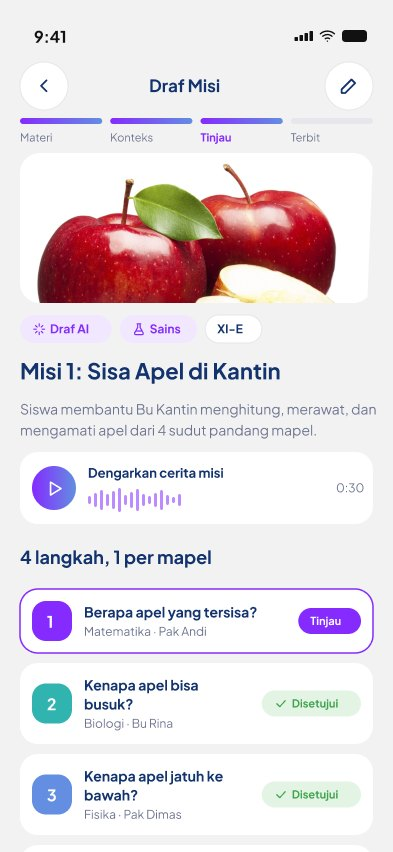
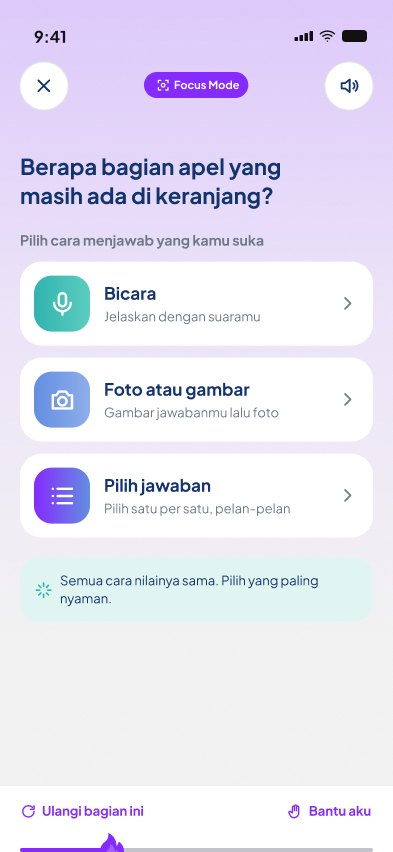
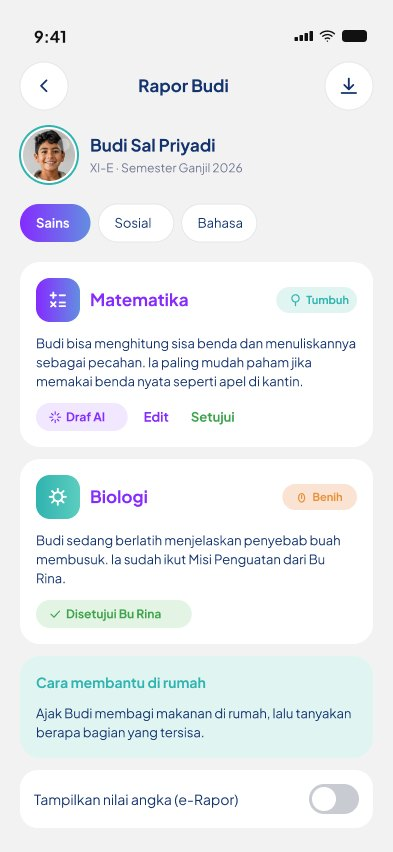
Lima layar yang menjalankan satu siklus belajar.

AI menyusun draf, tiap guru menyetujui langkah dari mapelnya.
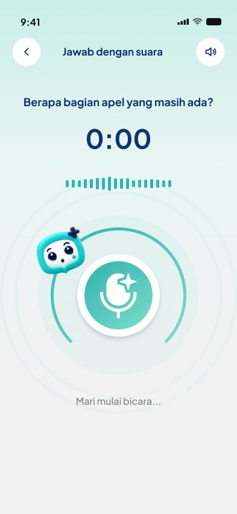
Bicara, foto, urutkan kartu, atau pilihan ganda.
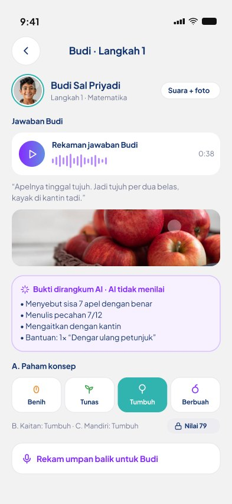
Rubrik 4 level, AI hanya merangkum bukti jawaban.
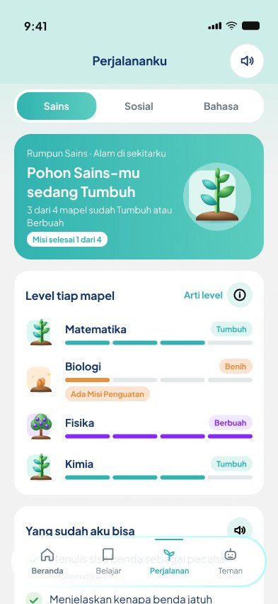
Progres tumbuh seperti tanaman, tanpa papan peringkat.
Perkembangan dalam kalimat, lengkap dengan tips di rumah.
Geser untuk melihat fitur lain
Pendidikan inklusif di Indonesia belum menyesuaikan siswanya.
Sumber daya pendukung, khususnya Guru Pembimbing Khusus, masih jauh dari cukup. Guru mapel beradaptasi sendiri dan materi tetap seragam.
Perbandingan sekolah penyelenggara pendidikan inklusif dengan ketersediaan GPK, tahun ajaran 2024/2025.
Sumber: olahan data Dapodik dan Direktorat PMPK Kemendikbudristek (2024–2025).
Satu apel di kantin, empat cara memahaminya.
Satu topik sehari-hari dibahas dari sudut pandang beberapa mapel. Setiap guru menilai dari lensanya sendiri.
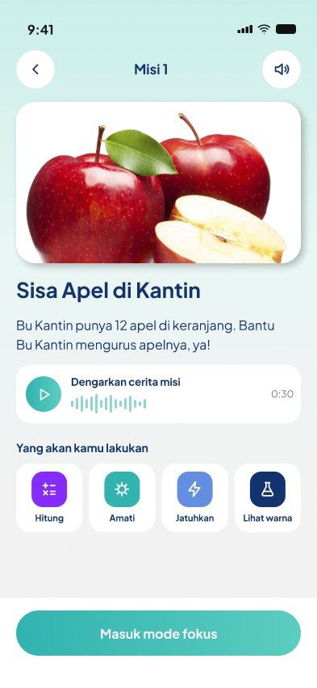
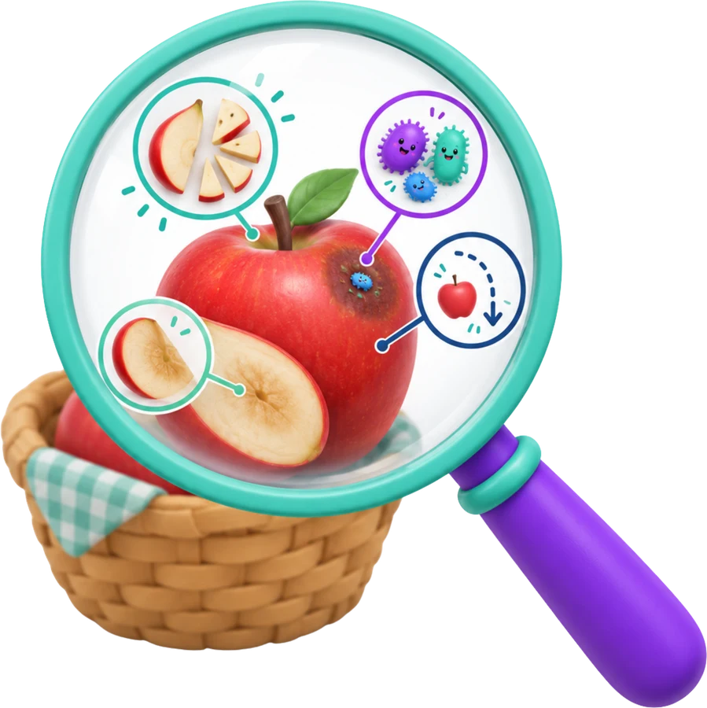
Dari benda nyata sampai konsep, guru tetap memegang kendali.
Materi bergerak bertahap dari konkret, ke visual, lalu abstrak. Siswa menjawab dengan cara yang paling nyaman baginya.
UDL + CRAAI menyusun draf misi dari modul dan konteks lokal. Guru mengedit, merekam suara, dan menerbitkan. AI tidak pernah menilai sendiri.
Rubrik 4 levelPenilaian guru menentukan tindak lanjut: lanjut ke misi berikutnya atau Misi Penguatan. Orang tua menerima rapor deskriptif.
Misi PenguatanEmpat peran, satu perjalanan belajar.
Pilih peran untuk melihat layarnya, lalu coba langsung di prototipe Figma.
Dari materi per mapel menjadi misi lintas mapel.
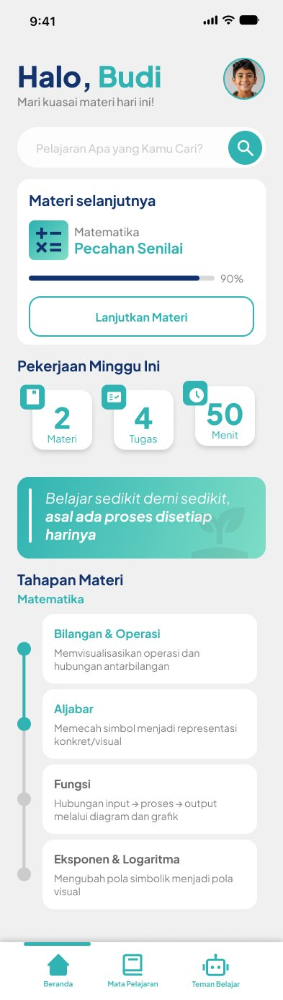
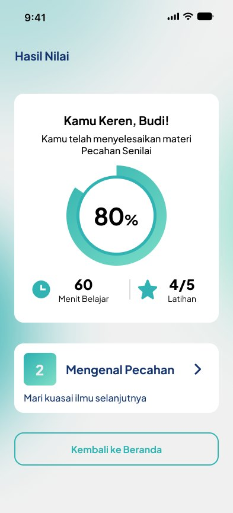
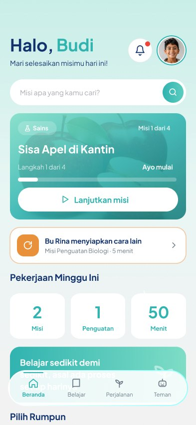
Diuji bersama guru, siswa, dan orang tua.
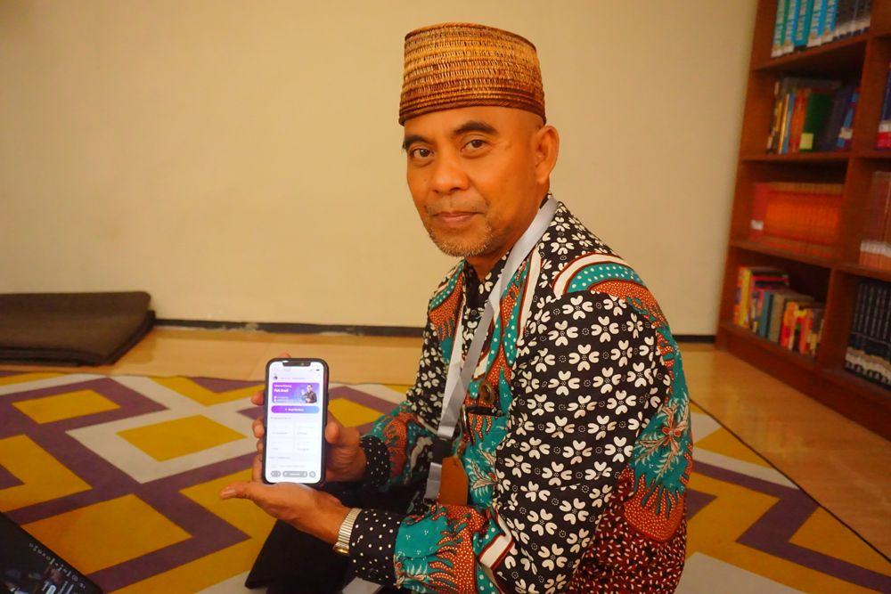
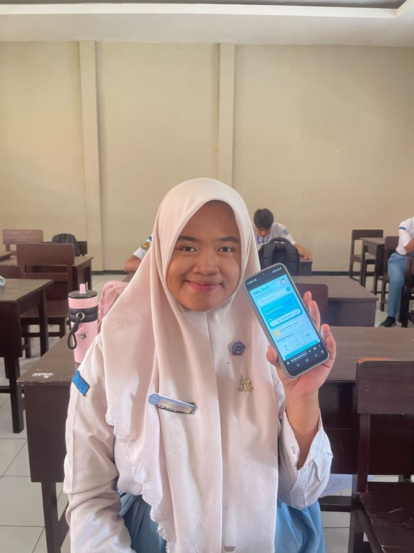
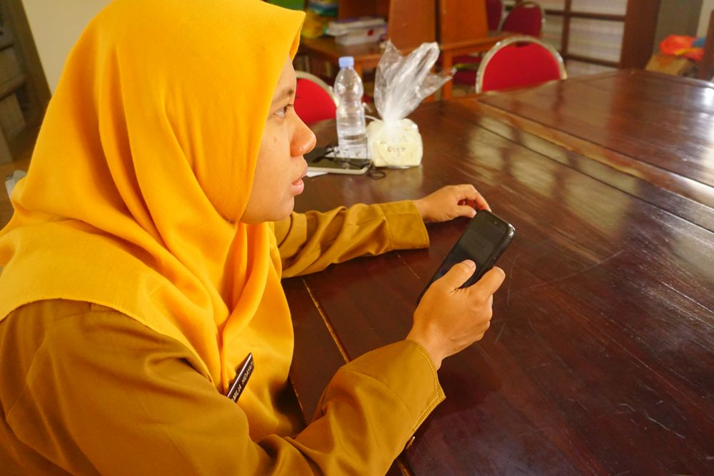
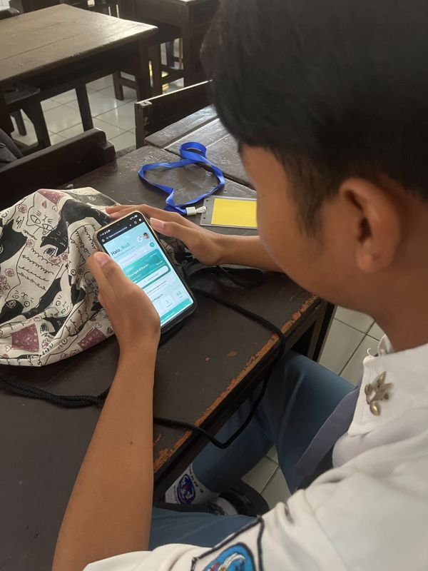
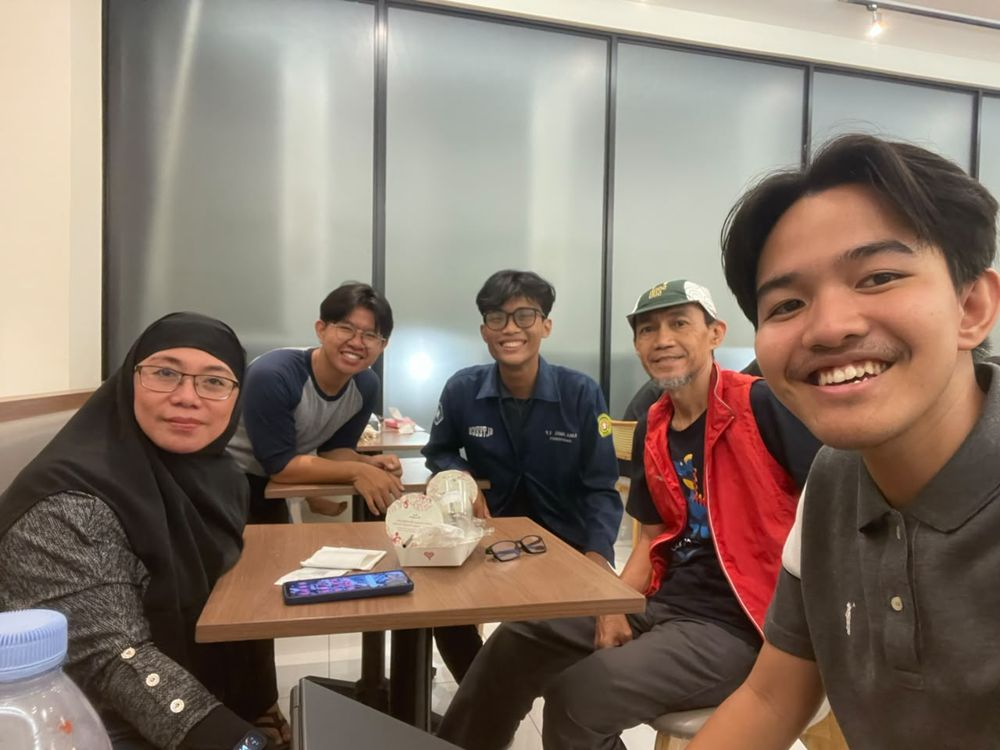
Rujukan laporan akhir NOVA (24 sumber), disusun sesuai Laporan Akhir GEMASTIK XIX 2026.
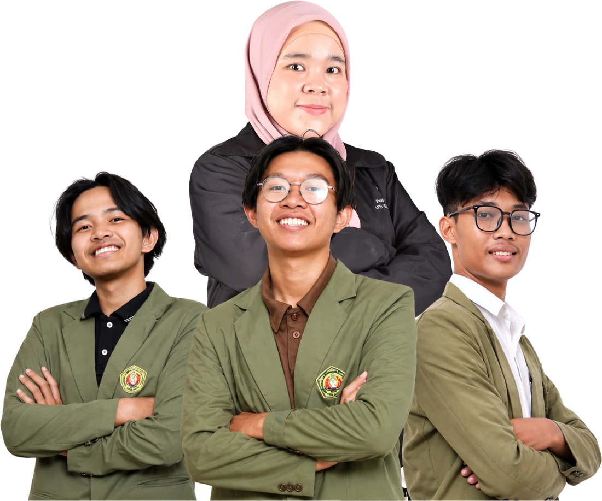
Dosen pembimbing: Reisa Permatasari, ST, M.Kom
UPN Veteran Jawa Timur
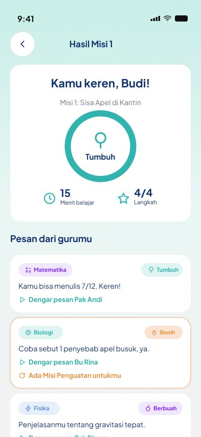
+NOVA menghubungkan guru mapel, siswa slow learner, GPK, dan orang tua dalam satu siklus misi tematik. Prototipe paling nyaman dibuka di laptop atau aplikasi Figma.